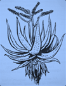
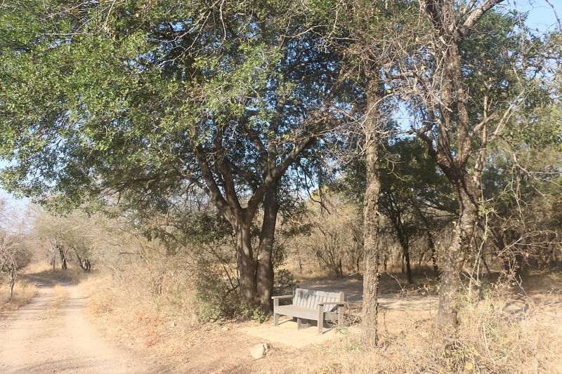
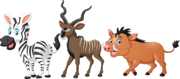

Afrikaans
French
Marlothii Conservancy
Self-Guided
Tree Walk
Marlothii Bewarea
Self-Begeleide
Boom Wandelroete
Marlothii Conservancy
Guide pour la promenade découverte
des arbres de Marloth Park
We thank the following individuals and businesses who have sponsored this Self-Guided Tree Walk or Drive:
- Nico and Jasmyn De Bruyn - De Bruine Huis.
- Matilda Bester – Meerkatgat Self-Catering Cottage
- Derrick and Sanet Bruins-Lich

Marlothii Conservancy works to protect and enhance the environment of Marloth Park so that residents and visitors may enjoy its beauty and wildlife in a natural bush setting.
We do this by:
- Removing alien plants.
- Protecting and revegetating degraded areas of veldt.
- Providing a tree tagging service.
- Maintaining the giraffe’s favourite waterhole at Gruispan.
- Holding a monthly Ecology and Bird walk every third Saturday of the month at Henk Van Rooyen Park.
- Educating people on aspects of Marloth Park’s ecology.
If you would like to support us, please donate to:
Bank: First National Bank
Account no: 62080272653
Branch code: 270952
Reference: Your Surname and 'tree project'
Nous remercions toutes les personnes et entreprises qui se sont impliquées dans la réalisation de cette promenade ( qui peut se faire à pied ou en voiture ), et plus particulièrement :
- Nico et Jasmyn De Bruyn - De Bruyn Huis
- Matilda Bester - Meerkargat Self Catering Cottage
- Derrick et Sanet Bruins - Lich
Marlothii Conservancy est une association de passionnés qui travaillent à protéger et améliorer l environnement de Marloth Park site exceptionnel dans le bush sud africain, pour que les résidents et visiteurs du parc puissent profiter de sa beauté et de sa vie sauvage.
Pour celà, les actions du Marlothii Conservancy sont les suivantes :
- Repérer et supprimer les plantes " aliens" ( que l on ne trouve pas à l'état naturel dans le bush).
- Permettre à tous résidents de faire apposer sur ses arbres le nom, afin que chacun dans Marloth Park ait une parfaite connaissance des arbres du parc.
- Maintenir en état le point d eau favori des girafes à Gruispan.
- Organiser une promenade écologique et d observation des oiseaux ouvertes à tous, tous les troisièmes samedi du mois à 6h00 au Parc Van Royen, rue Maroelen Marloth Park
- Donner toutes informations relatives à l équilibre écologique si particulier de Marloth Park.
Vous voulez nous aider ! Faites un don à :
Banque : First National Bank
Compte : 62080272653
Code Agence : 270952
Référence : Your Surname and 'tree project'
Ons bedank graag die volgende individue of besighede wat hierdie self begeleide boom wandelroete geborg het:
- Nico and Jasmyn De Bruyn - De Bruine Huis.
- Matilda Bester – Meerkatgat selfbediening gastehuis
- Derrick en Sanet Bruins-Lich
Marlothii Bewarea beywer hulle daarvoor om die omgewing van Marloth Park te beskerm en te verbeter, sodat inwoners en besoekers die skoonheid end wildlewe in 'n natuurlike bos kan geniet
Ons doen dit deur:
- Verwydering van indringerplante.
- Beskerming en hervestiging van versteurde veldareas.
- Boom identifikasie en nommering.
- Instandhouding van die kameelperde se gunsteling drinkplek by Gruispan.
- Hou maandeliks, elke derde Saterdag van die maand 'n Omgewings- en Voëlkyk uitstappie te Henk van Rooyen Park.
- Lig mense in oor aspekte van Marloth Park se ekologie.
Indien u ons wil ondersteun, stuur asseblief donasies aan:
Eerste Nasionalebank
Komatiepoort
Rekening nommer 62080272653
Bankkode 270952
Verwysing - U van en "Boom Projek"
Loop 1
Seekoei St. to Buffel St
Start at the eastern end.
Distance: Approximately 750m.
Time Required: Leisurely 1hr walking.
Name the tree and swing the ? aside to reveal the answer.
Omloop 1
Seekoeistraat tot Buffelstraat.
Begin by Oostelike kant.
Afstand: Ongeveer 750m.
Tyd benodig: 'n Gemaklike 1 uur wandeling.

Dankie dat u Marlothpark besoek het en deelgeneem het aan die Self-Begeleide Boomwandeling of -rit.
Indien u meer inligting benodig , kontak asseblief Marlothii Bewarea:
E-Pos: marlothiiconservancy@gmail.com
Klik hier vir Facebook
Onthou
Bevolking klein...
Of groot...
Ons is lief vir almal!

Ry stadig.
Die diere kry voorkeur op die paaie.
Geniet die dag.
Merci pour le temps que vous avez consacré à cette promenade de découverte de la flore et des arbres du bush, et bravo pour votre visite à Marloth Park !
Nous espérons vous revoir très bientôt.
Pour tout contact avec notre association : marlothiiconservancy@gmail.com
Souvenez vous
Petits et charmants...
Ou très imposants
On les aime tous autant!
Conduisez lentement, et
Laissez toujours la priorité aux animaux du bush !!
Belle journée
Thank you for visiting Marloth Park and participating in our Self-Guided Tree Walk or Drive.
If you require further information, please contact Marlothii Conservancy:
Email: marlothiiconservancy@gmail.com
Click here for Facebook
Remember
Population small...
And tall...
We love them all!
Drive slowly.
Animals have right of way.
Enjoy your day.